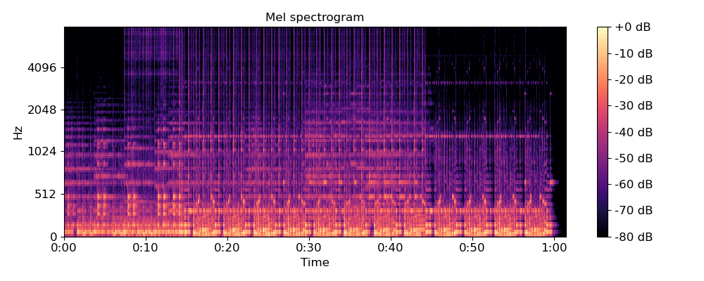

librosa.feature.melspectrogram¶
-
librosa.feature.melspectrogram(y=None, sr=22050, S=None, n_fft=2048, hop_length=512, win_length=None, window='hann', center=True, pad_mode='reflect', power=2.0, **kwargs)[source]¶ Compute a mel-scaled spectrogram.
If a spectrogram input S is provided, then it is mapped directly onto the mel basis mel_f by mel_f.dot(S).
If a time-series input y, sr is provided, then its magnitude spectrogram S is first computed, and then mapped onto the mel scale by mel_f.dot(S**power). By default, power=2 operates on a power spectrum.
- Parameters
- ynp.ndarray [shape=(n,)] or None
audio time-series
- srnumber > 0 [scalar]
sampling rate of y
- Snp.ndarray [shape=(d, t)]
spectrogram
- n_fftint > 0 [scalar]
length of the FFT window
- hop_lengthint > 0 [scalar]
number of samples between successive frames. See
librosa.core.stft- win_lengthint <= n_fft [scalar]
Each frame of audio is windowed by window(). The window will be of length win_length and then padded with zeros to match n_fft.
If unspecified, defaults to
win_length = n_fft.- windowstring, tuple, number, function, or np.ndarray [shape=(n_fft,)]
a window specification (string, tuple, or number); see
scipy.signal.get_windowa window function, such as
scipy.signal.hanninga vector or array of length n_fft
- centerboolean
If True, the signal y is padded so that frame t is centered at y[t * hop_length].
If False, then frame t begins at y[t * hop_length]
- pad_modestring
If center=True, the padding mode to use at the edges of the signal. By default, STFT uses reflection padding.
- powerfloat > 0 [scalar]
Exponent for the magnitude melspectrogram. e.g., 1 for energy, 2 for power, etc.
- kwargsadditional keyword arguments
Mel filter bank parameters. See
librosa.filters.melfor details.
- Returns
- Snp.ndarray [shape=(n_mels, t)]
Mel spectrogram
See also
librosa.filters.melMel filter bank construction
librosa.core.stftShort-time Fourier Transform
Examples
>>> y, sr = librosa.load(librosa.util.example_audio_file()) >>> librosa.feature.melspectrogram(y=y, sr=sr) array([[ 2.891e-07, 2.548e-03, ..., 8.116e-09, 5.633e-09], [ 1.986e-07, 1.162e-02, ..., 9.332e-08, 6.716e-09], ..., [ 3.668e-09, 2.029e-08, ..., 3.208e-09, 2.864e-09], [ 2.561e-10, 2.096e-09, ..., 7.543e-10, 6.101e-10]])
Using a pre-computed power spectrogram
>>> D = np.abs(librosa.stft(y))**2 >>> S = librosa.feature.melspectrogram(S=D)
>>> # Passing through arguments to the Mel filters >>> S = librosa.feature.melspectrogram(y=y, sr=sr, n_mels=128, ... fmax=8000)
>>> import matplotlib.pyplot as plt >>> plt.figure(figsize=(10, 4)) >>> librosa.display.specshow(librosa.power_to_db(S, ... ref=np.max), ... y_axis='mel', fmax=8000, ... x_axis='time') >>> plt.colorbar(format='%+2.0f dB') >>> plt.title('Mel spectrogram') >>> plt.tight_layout() >>> plt.show()
